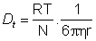
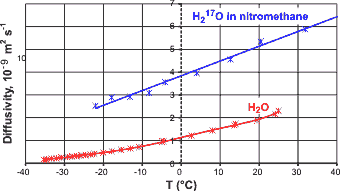
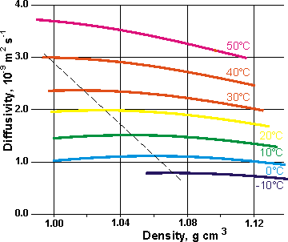
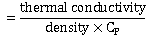
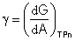

<!DOCTYPE html PUBLIC "-//W3C//DTD XHTML 1.0 Transitional//EN" "http://www.w3.org/TR/xhtml1/DTD/xhtml1-transitional.dtd">
<html xmlns="http://www.w3.org/1999/xhtml">
<head>
<meta http-equiv="Content-Type" content="text/html; charset=iso-8859-1" />
<meta http-equiv="Content-Style-Type" content="text/css" />
<meta http-equiv="Content-Script-Type" content="text/javascript" />
<meta http-equiv="Content-Language" content="en-us" />
<meta name="Description" content="Explanation of the physical anomalies of water including explanation of surface tension, the Jones-Ray effect, sea foam, viscosity and self-diffusion" />
<meta name="Keywords" content="water,anomalies,anomaly,anomalous,surface tension,Jones-Ray,sea foam,viscosity,pressure,temperature,diffusion" />
<meta name="author" content="martin chaplin: martin.chaplin@btinternet.com" />

<title>Physical Anomalies of Water</title>
<script language="javascript" type="text/javascript" src="head.js"></script>
</head>
<noscript>
Your browser does not support JavaScript!
</noscript>
<head>
<link rel="shortcut icon" href="favicon.ico" type="image/x-icon" />
<link rel="ToC" href="water_structure_science.html" />
<link rel="stylesheet" href="water.css" type="text/css" />
<style type="text/css">
<!--
.style17 {
	font-weight: bold
}
-->
</style>
</head>
<body onload="mm_preloadImages('images/seab1.gif','images/seab3.gif','images/seab4.gif','images/top2.gif', 'images/top3.gif')">
<a name="top" id="top"></a>
<div style="width:761px; height:93px; background-color:#006868;padding-top:3px;border:0px;margin:0px;">
  <div style="padding:0px;border:0px;margin:0px;padding-left:3px;width:140px; height:22px; background-color:#006868; float:left; display:inline;">
    <form class="quicklinkform" action="physical_anomalies.html">
      <label for="&rdquo;menu1&rdquo;"></label>
      <select class="quicklink"
            onchange="mm_jumpMenu('parent',this,0)" name="menu1" id="&rdquo;menu1&rdquo;">
       <option  value="index.html" selected="selected">Quick links</option>
        <option value="index.html">......................................</option>
        <option value="water_molecule.html">Water molecule</option>
        <option value="water_hydrogen_bonding.html">hydrogen-bonding</option>
        <option value="water_phase_diagram.html">Phase diagram</option>
        <option value="water_vibrational_spectrum.html">Water spectrum</option>
        <option value="water_dissociation.html">Dissociation</option>
        <option value="water_anomalies.html">Anomalies</option>
        <option value="water_properties.html">Water properties</option>
        <option value="index.html">......................................</option>
        <option value="clusters_overview.html">Water clusters</option>
        <option value="protein_hydration.html">Protein hydration</option>
        <option value="hydrocolloids_gums.html">Hydrocolloids</option>
        <option value="ion_hydration.html">Ions</option>
        <option value="index.html">......................................</option>
        <option value="water_structure_science.html">Table of Contents</option>
        <option value="water_sitemap.html">Site map</option>
</select>
</form>
</div>
  <div style="padding:0px;border:0px;margin:0px; height:22px; background-color:#006868; float:left; display:inline;"><a href="search.html" onmouseout="mm_swapImgRestore()" onmouseover="mm_swapImage('search','','images/seab1.gif',1)"></a><a href="water_sitemap.html"></a><a href="https://water.lsbu.ac.uk/php-cgiwrap/water/pfp.php3?page=http://water.lsbu.ac.uk/water/physical_anomalies.html" onmouseout="mm_swapImgRestore()" onmouseover="mm_swapImage('printer','','images/seab4.gif',1)"  ></a><a href="add1.html"></a></div>
  <map name="topmap" id="topmap">
    <area shape="poly" coords="322,42,429,42,429,61,322,61" href="martin_chaplin.html" title="Go to my page" alt="Go to my page" onmouseout="mm_swapImgRestore()" onmouseover="mm_swapImage('topi','','images/top3.gif',1)"  />
      <area shape="poly" coords="553,3,554,30,693,30,717,8,747,32,717,56,690,33,204,35,204,3" href="water_structure_science.html" title="Go to Water Structure and Science site contents" alt="Water Structure and Science" onmouseout="mm_swapImgRestore()" onmouseover="mm_swapImage('topi','','images/top2.gif',1)" />
</map>
  <div style="padding:0px;border:0px; margin-left:3px; width:755px; background-color:#006868;"></div>
</div>
<div style="width:761px; background-color:#006868;padding:0px;border:0px;margin:0px;">
  <div style="width:751px; background-image:url('images/bg.gif');margin-left:3px;padding-left:4px;border:0px;padding-top:0px;padding-bottom:0px; background-color:#FFFae2;">
    <!-- print begin -->
    <h1>Explanation 
      of the Physical Anomalies of Water (F1-F9)</h1>
    <p><span class="style15"> <a href="physical_anomalies.html#Visc" title="go to section below">Water has an unusually high viscosity</a><br />
     <a href="physical_anomalies.html#Tvisc" title="go to section below">Large viscosity and Prandtl number 
    increase as the temperature is 
    lowered</a><br />
     <a href="physical_anomalies.html#Pvisc" title="go to section below">Water's viscosity decreases with pressure 
    below 33&nbsp;&deg;C</a><br />
     <a href="physical_anomalies.html#Tdiff" title="go to section below">Large diffusion decrease as the temperature is 
    lowered</a><br />
     <a href="physical_anomalies.html#diff" title="go to section below">At low temperatures, the self-diffusion 
    of water increases as the density and pressure increase</a><br />
     <a href="physical_anomalies.html#thermdiff" title="go to section below">The thermal diffusivity 
    rises to a maximum at about 0.8 GPa</a><br />
     <a href="physical_anomalies.html#ST" title="go to section below">Water has an unusually high surface 
    tension</a><br />
     <a href="physical_anomalies.html#JR" title="go to section below">Some salts give a surface tension-concentration minimum; the Jones-Ray effect</a><br />
     <a href="physical_anomalies.html#foam" title="go to section below">Some salts prevent the coalescence of small bubbles</a></span><span class="style15"><br />
    <a href="physical_anomalies.html#Vsalt" title="go to section below"> The molar ionic volumes of salts show maxima with respect to temperature</a></span><br />
</p>
    <h2> F1&nbsp;&nbsp;&nbsp; <a name="Visc" id="Visc"></a>High <a title="go to 'Water properties data' page"  href="water_properties.html#Viscosity">viscosity</a> (0.89 cP, compare pentane 0.22 cP, at 25&nbsp;&deg;C)</h2>
    <p> The viscosity of a liquid is the efficiency  with which it flows and is determined by the ease with which molecules 
      can move relative to each other. It depends on the intermolecular forces and molecular momentum exchange. At lower temperatures (&lt; 40&nbsp;&deg;C) in water, the dominant forces are those holding 
      the molecules together (cohesiveness) [<a href="ref36.html#r3535" name="r3535" title="go to cited reference" id="r3535">3535</a>]. This cohesiveness is large in water due to 
    its extensive three-dimensional hydrogen bonding, and ( at these low temperatures) the viscosity is proportional to the wavenumber of the O-H stretching of water [<a href="ref36.html#r3539" name="r3539" title="go to cited reference" id="r3539">3539</a>]. As the hydrogen bonds change with the velocity of flow, the flow-rate affects the viscosity of water [<a href="ref36.html#r3539" title="go to cited reference">3539</a>].</p>
    <p>&nbsp;</p>
    <p>It should be noted 
      that although the viscosity of water is high, it is not so high that it causes 
      too much difficulty being moved around within organisms. The Arrhenius 
      energy of activation for viscous flow is similar to the hydrogen 
      bond energy&nbsp; (H<sub>2</sub>O, 21.5 kJ  &#739; mol<sup>&minus;1</sup>; D<sub>2</sub>O, 
      24.7 kJ  &#739; mol<sup>&minus;1</sup>; T<sub>2</sub>O, 26.2 kJ  &#739; mol<sup>&minus;1</sup>, 
      all calculated from [<a href="ref.html#r73" name="r73b" title="go to cited reference" id="r73b">73</a>]; all 
    at 0&nbsp;&deg;C and all more than doubling at -30&nbsp;&deg;C).&nbsp;</p>
    <p>&nbsp;</p>
    <p>As with other liquids the kinematic viscosity of water has a minimum; this is of interest but not an anomaly. The minimum occurs at about 700 K at 100 MPa (~10<sup>&minus;7 </sup>m<sup>2</sup> &#739; s<sup>&minus;1</sup>) [<a title="go to cited reference"  href="ref44.html#r4384">4384</a><a name="r4384" id="r4384"></a>]. [<a href="water_anomalies.html" title="go back to the 'Anomalies' page"> <span class="style16">&nbsp;Anomalies page:&nbsp;</span></a><a title="go to top of page" href="physical_anomalies.html#top"><span class="style16">Back to Top&nbsp;</span></a>]<br />
    </p>
    <h2> F2&nbsp;&nbsp;&nbsp; <a name="Tvisc" id="Tvisc"></a>Large <a href="water_anomalies.html#graph">viscosity </a> and Prandtl number increase as the temperature is 
      lowered.</h2>
    <figure  class="floatright">
<figcaption>
      <p align="center">Dynamic viscosity, from [<a href="ref.html#r69">69</a>], [<a href="ref.html#r73">73</a>]</p>
      <p align="center">&nbsp;</p>
</figcaption>
</figure>
    <p>The increase in the viscosity with lower temperatures is particularly noticeable within supercooled water (see opposite). The water cluster <a title="go to 'Water clusters' page"  href="icosahedral_water_clusters.html#Fig2">equilibrium</a> shifts towards the more open structure (for example, <abbr title="Expanded icosahedral water cluster structure"><a title="go to 'Water clusters' page"  href="icosahedral_water_clusters.html#ES">ES</a></abbr>) as the temperature is lowered. This structure is formed 
      by stronger hydrogen bonding. In turn, this creates 
      larger clusters and reduces the ease of movement (increasing 
      viscosity).</p>
    <p>&nbsp;</p>
    <p>There is similar behavior with the dynamic viscosity (&eta;) of D<sub>2</sub>O where    </p>
    <p align="center">&eta;<sub>(D2O)(T)</sub> = 1.0544   &#739; &eta;<sub>(H2O)(T - 6.498 K)</sub></p>
    <p >&nbsp;</p>
    <p >where 1.0544 is the square root of the ratio of the molar masses, and 6.498 K is the thermal offset [<a href="ref38.html#r3728">3728</a><a name="r3728" id="r3728"></a>].</p>
    <p>&nbsp;</p>
    <p align="left">The high viscosity at low temperatures is a major cause of the very large increase in the <a href="water_properties.html#prandt">Prandtl number</a> (<em>Pr</em>).</p>
    <p align="left">&nbsp;</p>
    <p align="center"></p>
    <p align="center">&nbsp;</p>
    <p align="left">where &nu; = kinematic viscosity (m<sup>2</sup>  &#739; s<sup>&minus;1</sup>),     &alpha; = thermal diffusivity ( m<sup>2</sup> &#739; s<sup>&minus;1</sup>),     C<sub>P</sub> = specific heat, (J  &#739; kg<sup>&minus;1</sup> &#739; K<sup>&minus;1</sup> = m<sup>2</sup> &#739; s<sup>&minus;2</sup> &#739; K<sup>&minus;1</sup>), &eta; = dynamic viscosity ( Pa&middot;s = kg  &#739; m<sup>&minus;1</sup> &#739; s<sup>&minus;1</sup>), <em>k</em> = thermal conductivity (W  &#739; m<sup>&minus;1</sup> &#739; K<sup>&minus;1 </sup>= kg  &#739; m  &#739; s<sup>&minus;3</sup> &#739; K<sup>&minus;1</sup>). </p>
      <figure  class="floatleft">
<figcaption>
      <p align="center">&nbsp;</p>
      <p align="center">The Prandtl number, from [<a href="ref6.html#r540">540</a>]</p>
      <p align="center">&nbsp;</p>
</figcaption>
</figure>
    <p>&nbsp;</p>
    <p>&nbsp;</p>
    <p>&nbsp;</p>
    <p>&nbsp;</p>
    <p>The Prandtl number  is a dimensionless number that compares energy convection and conduction. <em>Pr</em> &#8810; 1 means thermal conduction dominates over thermal convection (heat diffuses faster than matter moves; as with liquid mercury), whereas <em>Pr</em> &#8811; 1 means that convection is more effective in transferring energy away from an area, compared to  conduction; as with motor oils. </p>
    <p>&nbsp;</p>
    <p>There is a minimum in <em>Pr</em> at 254.7&nbsp;&deg;C (<em>Pr</em> = 0.8313) [<a href="ref6.html#r540">540</a><a name="r540" id="r540"></a>].</p>
 <div style=" float:none; clear:both;"></div>
 
    <p align="right"><a href="water_anomalies.html" title="go back to the 'Anomalies' page"> <span class="style16">&nbsp;Anomalies page:&nbsp;</span></a><a title="go to top of page" href="physical_anomalies.html#top"><span class="style16">Back to Top&nbsp;</span></a>]</p>
    <div style=" float:none; clear:both;">
      <h2> F3&nbsp;&nbsp;&nbsp; <a name="Pvisc" id="Pvisc"></a>Viscosity 
        decreases with pressure (at temperatures below 33&nbsp;&deg;C)</h2>
      <p> Viscous flow occurs by molecules moving through the voids 
        that exist between them. As the pressure increases, the volume 
        decreases, and the volume of these voids reduces, so usually 
        rising pressure increases the viscosity. Water behaves anomalously below about 30&nbsp;&deg;C, at low pressures, increasing pressure reduces viscosity instead of increasing it  [<a title="go to cited reference" href="ref29.html#r2891">2891</a><a name="r2891" id="r2891"></a>]. The viscosity passes through a pressure minimum and then increases.</p>
      <p>&nbsp;</p>
      <figure  class="floatright">
<figcaption>
      <p align="center">Liquid water's pressure-viscosity behavior</p>
      <p align="center">&nbsp;</p>
</figcaption>
</figure>
      <p>Water's pressure-viscosity behavior [<a title="go to cited reference" href="ref6.html#r534">534</a><a name="r534" id="r534"></a>, <a title="go to cited reference" href="ref29.html#r2890">2890</a><a name="r2890" id="r2890"></a>] can be explained by the increased pressure (up to about 
      100-200 MPa) causing deformation, so reducing the strength 
      of the hydrogen-bonded network, which is also partially 
      responsible for the viscosity. This reduction in cohesiveness 
      more than compensates for the reduced void volume. It 
      is thus a direct consequence of the <a href="clusters_overview.html">balance</a> between hydrogen-bonding effects and the <a href="hydrogen_bonds.html#b" title="go for more information">van der Waals</a> dispersion forces [<a title="go to cited reference" href="ref6.html#r558">558</a><a name="r558" id="r558"></a>] 
      in water, with hydrogen-bonding prevailing at lower temperatures 
      and pressures. At higher pressures (and densities), the <a href="clusters_overview.html">balance</a> between hydrogen-bonding 
      effects and the van der Waals dispersion forces is tipped 
      in favor of the dispersion forces. The remaining <a title="go to 'Hydrogen bonding in water' page"  href="water_hydrogen_bonding.html">hydrogen 
        bonds</a> are stronger due to the close proximity of 
      the contributing oxygen atoms [<a title="go to cited reference" href="ref7.html#r655">655</a><a name="r655" id="r655"></a>]. 
      Viscosity, then, increases with pressure.
      </p>
      <p>&nbsp;</p>
      <figure  class="floatleft">
<figcaption>
      <p align="center">Pressure-(relative)-viscosity behavior; from [<a title="go to cited reference" href="ref6.html#r534">534</a>, <a title="go to cited reference" href="ref29.html#r2890">2890</a>] </p>
      <p align="center">&nbsp;</p>
</figcaption>
</figure>
      <p>&nbsp;</p>
      <p>&nbsp;</p>
      <p>&nbsp;</p>
      <p>&nbsp;</p>
      <p>&nbsp;</p>
      <p>The dashed lines 
        (above right and  left) indicate the viscosity minima.      Pressure can almost halve the viscosity at low temperatures. The <a href="cluster_evidence.html#2phas">two-state model</a> has been used to explain the minima, with the strongly hydrogen-bonded and structured low-density water being converted to high-density water under pressure, due to bending and breakage of the hydrogen bonds [<a title="go to cited reference" href="ref29.html#r2890">2890</a>].</p>
      <p>&nbsp;</p>
      <p>The variation of viscosity with pressure and temperature 
        has been used as evidence that the viscosity is determined 
        more by the extent of hydrogen bonding rather than hydrogen 
        bonding strength [<a title="go to cited reference" href="ref9.html#r824">824</a><a name="r824" id="r824"></a>].</p>
      <p>&nbsp;</p>
      <p>Self-diffusion is also affected by pressure where (at 
        low temperatures) both the translational and rotational 
        motion of water anomalously increases as the pressure 
        increases (<a title="go to find more information"  href="physical_anomalies.html#diff">see below</a>).</p>
        <div style=" float:none; clear:both;"></div>
     <figure  class="floatright">
<figcaption>
      <p align="center">&nbsp;</p>
      <p align="center">Diffusion versus viscosity gives two lines, from  [<a href="ref25.html#r2414">2414</a>]</p>
</figcaption>
       </figure>
      <p>&nbsp;</p>
<p>&nbsp;</p>
      <p>Viscosity (&eta;) and diffusion (D) are related properties through the Stokes-Einstein  equation,</p>
      <p align="center"> </p>
      <p>&nbsp;</p>
      <p>The fractional Stokes-Einstein equations,</p>
      <p>&nbsp;</p>
      <p align="center">D = (T/&eta;)<sup>&minus;&zeta;</sup> </p>
      <p align="left">or</p>
	  <p align="center">D/T = (1/&eta;)<sup>&minus;&zeta;</sup></p>
      <p>&nbsp;</p>
      <p>give a better fit for water with &zeta; = &minus;0.943 for H<sub>2</sub>O (in the lower equation) in the range 258 K - 623 K and  &zeta; = &minus;0.956 for D<sub>2</sub>O 0.005 in the range 265 K - 623 K [<a href="ref42.html#r4152">4152</a><a name="r4152" id="r4152"></a>].</p>
      <p>&nbsp; </p>
      <p>Above opposite shows the Log-Log relationship of diffusivity and viscosity/temperature with two lines switching with different exponents close to the temperature of maximum density [<a href="ref25.html#r2414">2414</a><a name="r2414" id="r2414"></a>]. There appears to be a deviation from  the fractional Stokes-Einstein  equation below -25&nbsp;&deg;C [<a href="ref35.html#r3456">3456</a><a name="r3456" id="r3456"></a>]. This has been attributed to a combination of jump steps (between hydrogen-bonding sites) combined with the raising the relative diffusivity values.</p>
      <p>&nbsp; </p>
      <p align="right"><a href="water_anomalies.html" title="go back to the 'Anomalies' page"> <span class="style16">&nbsp;Anomalies page:&nbsp;</span></a><a title="go to top of page" href="physical_anomalies.html#top"><span class="style16">Back to Top&nbsp;</span></a>]</p>
  <div style=" float:none; clear:both;"></div>

    
    
      <h2> F4&nbsp;&nbsp;&nbsp; <a name="Tdiff" id="Tdiff"></a>Large diffusion decrease as the temperature is 
        lowered.</h2>
      <p>The  Stokes-Einstein equation may generally describe diffusion for translational  diffusion  [<a title="go to cited reference" href="ref9.html#r806">806</a><a name="r806" id="r806"></a>],</p>
      <p align="center">  </p>
      <p>and the Stokes-Einstein-Debye equation for rotational diffusion, where <em>D<sub>t</sub></em> and <em>D<sub>r</sub></em> are the translational and rotational diffusivities, respectively, R is the <abbr title="=8.314472 J/K/mol"><a title="go to 'Water properties data' page"  href="constants.html#gas">gas 
        constant</a></abbr>, N is <abbr title="=6.02214199 x 10^23/mol"><a title="go to 'Water properties data' page"  href="constants.html#avoga">Avogadro's 
        number</a></abbr>, &eta; is 
        dynamic viscosity, and r is water's molecular radius. The values for the  <a title="go to 'Water properties data' page"  href="water_properties.html#Diffusion_coefficient">self-diffusion</a> of water are  significantly reduced at lower temperatures, where 
        they anomalously decrease as the density decreases (<a title="go to find more information"  href="physical_anomalies.html#diff">see 
        below</a>). This is unsurprising as these diffusion terms are approximately proportional to the reciprocal of the viscosity, and <a title="go to find more information"  href="physical_anomalies.html#Tvisc">viscosity</a> anomalously increases at lower temperatures. The inverse relationship between 
        water diffusivity and dynamic viscosity and the ratio of translational to rotational diffusivity are almost independent 
        of temperature between about -35&nbsp;&deg;C&nbsp;and&nbsp;+100&nbsp;&deg;C. However, there 
        is a substantial divergence from these Stokes-Einstein relationships, and their ratio
        [<a href="ref11.html#r1040">1040</a>c], at lower, supercooled, temperatures (at 225 K [<a href="ref11.html#r1040">1040</a><a name="r1040" id="r1040"></a>a]) due to the differential effects 
        of clustering  [<a title="go to cited reference" href="ref9.html#r807">807</a><a name="r807" id="r807"></a>] caused by the presence of both low and higher density aqueous phases [<a href="ref11.html#r1040">1040</a>];<sup><a title="click for a related effect" href="physical_anomalies.html#f"> f</a><a name="bf" id="bf"></a></sup> the extensive 'sticky' low-density clusters reducing translational freedom, whereas rotational freedom is retained within the higher density intervening spaces. Below 232 K,  a slower nucleation rate increases with decreasing temperature, probably due to an even greater reduction  in water&rsquo;s diffusivity  [<a title="go to cited reference" href="ref27.html#r2645">2645</a><a name="r2645" id="r2645"></a>]. Although such behavior is expected of liquids close to their <a href="amorphous_ice.html#e" title="go for an explanation" >glass</a> transition, that is not the case with water, where it occurs well above the <a title="go to find more information" href="water_properties.html#glass">glass-transition temperature</a>. </p>
      <p>&nbsp;</p>
      <figure  class="floatleft">
<figcaption>
      <p align="center">Changes in diffusivity with the temperature, <span class="style4">from [<a title="go to cited reference" href="ref34.html#r3317">3317</a><a name="r3317" id="r3317"></a>a,<a title="go to cited reference" href="ref42.html#r4142" name="r4142" id="r4142">4142</a>], </span></p>
      <p align="center"><span class="style4">the line at the top left corresponds to HDL and that at the bottom right to LDA</span></p>
      <p align="center">&nbsp;</p>
</figcaption>
</figure>
      <p>The diffusion equations (above) give unexpectedly good estimates for the radius of the water molecule (r = 1.1 <a href="constants.html#ang" title="Angstrom">&Aring;</a>, 
        25&nbsp;&deg;C)<sup><a title="go for more information" href="physical_anomalies.html#a">a</a><a name="ba" id="ba"></a></sup> given that the equations were derived for large spherical 
        particles.</p>
      <p>&nbsp;</p>
     <figure  class="floatright">
<figcaption>
      <p align="center">Changes in diffusivity with the temperature</p>
      <p align="center">&nbsp;</p>
</figcaption>
</figure>
      <p>&nbsp;</p>
      <p>&nbsp;</p>
      <p>&nbsp;</p>
      <p>&nbsp;</p>
      <p>&nbsp;</p>
      <p>&nbsp;</p>
      <p>&nbsp;</p>
      <p>&nbsp;</p>
      <p>&nbsp;</p>
      <p>&nbsp;</p>
      <p>&nbsp;</p>
      <p>&nbsp;</p>
      <p>&nbsp;</p>
      <p>&nbsp;</p>
      <p>&nbsp;</p>
      <p>&nbsp;</p>
      <p>&nbsp;</p>
      <p>&nbsp;</p>
      <p>&nbsp;</p>
      <p>The activation energy for this diffusion 
        increases to about the equivalent of two hydrogen bonds 
        (44.4 kJ  &#739; mol<sup>&minus;1</sup>) at 238 K, where the diffusion 
        coefficient is 1.58  &#739; 10<sup>&minus;10</sup>   &#739; m<sup>2</sup>   &#739; s<sup>&minus;1</sup> [<a title="go to cited reference" href="ref7.html#r653">653</a><a name="r653" id="r653"></a>]. 
        The importance of this activation energy disappears above about 315 K when it appears to be less than the thermal energy [<a title="go to cited reference" href="ref13.html#r1295">1295</a><a name="r1295" id="r1295"></a>]. There is another change in the activation energy at about 180 K where the diffusion 
        coefficient is about 10<sup>&minus;15</sup> &#739; m<sup>2</sup> &#739; s<sup>&minus;1</sup> . Thus, the main reason for the low diffusion at low temperatures is the three-dimensional hydrogen bond network. Notably there is no turning point in the diffusion-temperature curve, and that has been mistakenly cited as disproving the second critical point hypothesis  [<a title="go to cited reference" href="ref34.html#r3317">3317</a>].</p>
      <p>&nbsp;</p>
      <p>The diffusion coefficient of <a href="amorphous_ice.html">deeply 
        supercooled water</a> is 2.2&nbsp;&#739; 10<sup>&minus;19</sup> m<sup>2</sup>   &#739; s<sup>&minus;1</sup> at 150 K [<a title="go to cited reference" href="ref4.html#r334">334</a><a name="r334" id="r334"></a>]. </p>
      <p>&nbsp;</p>
      <p>As shown below, this anomalous diffusional behavior 
        is not present when water diffuses in nitromethane in 
        the absence of hydrogen-bonding [<a title="go to cited reference" href="ref7.html#r652">652</a><a name="r652" id="r652"></a>]. </p>
</div>
    <div class="floatleft" style="width:380px;" align="center" >
<figure  class="floatleft">
<figcaption>
      <p align="center">Change in diffusivity with the temperature of water</p>
      <p align="center"> in nitromethane and in itself</p>
      <p align="center">&nbsp;</p>
</figcaption>
</figure>
</div>
    <div align="center">
      <figure  class="floatright">
<figcaption>
      <p align="center">&nbsp;</p>
      <p align="center">Arrhenius plot of  diffusivity of water </p>
      <p align="center">in nitromethane and in itself</p>
      <p align="center">&nbsp;</p>
</figcaption>
</figure>
</div>
   
      <div style=" float:none; clear:both;"></div> 
<div align="right">
      <p>&nbsp;</p>
      <p><a href="water_anomalies.html" title="go back to the 'Anomalies' page"> <span class="style16">&nbsp;Anomalies page:&nbsp;</span></a><a title="go to top of page" href="physical_anomalies.html#top"><span class="style16">Back to Top&nbsp;</span></a>] </p>
</div>
    <h2> <a name="diff" id="diff"></a>F5&nbsp;&nbsp;&nbsp; At low temperatures, 
      the self-diffusion of water increases as the density and pressure 
      increase. </h2>
    <div class="floatright" align="left" style="width:360px;"> 
<figure  class="floatright">
<figcaption>
      <p align="center">Variation in the diffusivity of water with pressure</p>
      <p align="center">&nbsp;</p>
</figcaption>
</figure>
      <p align="left" class="style3">Data for these tables was calculated from<sup><a title="go for more information" href="physical_anomalies.html#a">a</a></sup> the <a href="http://www.iapws.org/relguide/visc.pdf" title="opens new site in a pop-up window"   target="otherWin2" onclick="newWin('otherWin2')">IAPWS</a> viscosity data [<a href="ref6.html#r540">540</a>] or from [<a title="go to cited reference" href="ref21.html#r2081" name="r2081" id="r2081">2081</a>]. The dashed lines indicate the maxima. </p>
     <figure  class="floatright">
<figcaption>
      <p align="center">&nbsp;</p>
      <p align="center">&nbsp;</p>
      <p align="center">Variation in Diffusivity of water with density</p>
      <p align="center">&nbsp;</p>
</figcaption>
</figure>
</div>
    <p align="left">The increase in self-diffusion with density (within 
      the range of about 0.9 g   &#739; cm<sup>&minus;3</sup> up to about 1.1 g 
        &#739; cm<sup>&minus;3</sup>, at low temperatures) is in contrast to normal liquids 
      where increasing density decreases self-diffusion as the molecules 
      restrict each other's movements; i.e., liquid water becomes more fluid when squeezed.</p>
    <p>&nbsp;</p>
    <p align="left">The density increase may 
      be due to increasing temperature, below 4&nbsp;&deg;C, at atmospheric 
      pressure or due to increasing pressure at low temperatures. 
      Liquids typically show reduced self-diffusion when they are 
      squeezed. However, water at 0&nbsp;&deg;C increases its diffusivity by 
      8% under a pressure of about 200 MPa [<a href="ref3.html#r226" name="r226" title="go to cited reference" id="r226">226</a>], 
      and the diffusivity of supercooled water at -30&nbsp;&deg;C increases 
      by 60% with a similar pressure increase. The temperature limit for this anomalous behavior is &asymp; 42&nbsp;&deg;C &plusmn;5&nbsp;&deg;C in agreement with the limit of the <a href="density_anomalies.html#Tcomp">compressibility anomaly</a> [<a title="go to cited reference" href="ref20.html#r1970" name="r1970" id="r1970">1970</a>]. Further increase 
      in pressure reduces the diffusivity in common with the behavior 
      of other liquids. The movement of water becomes restricted 
      at low temperatures as the more open (lower density) structure 
      produced on cooling (<a title="go to find more information"  href="physical_anomalies.html#Tvisc">see above</a>) 
      is formed by stronger and more complete hydrogen bonding, 
      which reduces the self-diffusion. </p>
    <p>&nbsp;</p>
    <p align="left">The dashed lines 
      (above and  left) indicate the diffusivity maxima. The  <a href="cluster_evidence.html#2phas">two-state mode</a> has been used to explain the maxima. The strongly  hydrogen-bonded and structured low-density water is converted to high-density  water under pressure due to bending and breakage of the hydrogen bonds  [<a title="go to cited reference" href="ref29.html#r2890">2890</a>].</p>
    <p>&nbsp;</p>
    <p align="left">The strength of the hydrogen 
      bonding is a controlling influence in this anomalous region, 
      where the hydrogen bond angles and the inter-molecular distances 
      are strongly coupled, and this order decreases on compression 
      [<a href="ref2.html#r169" name="r169" title="go to cited reference" id="r169">169</a>] due to the collapse 
      of <abbr title="Expanded icosahedral water cluster structure"><a title="go to 'Water clusters' page"  href="icosahedral_water_clusters.html#ES">ES</a></abbr> structures to <abbr title="Collapsed icosahedral water cluster structure"><a title="go to 'Water clusters' page"  href="icosahedral_water_clusters.html#CS">CS</a></abbr> structures. Simulation studies have shown that self-diffusion 
      goes through a minimum as the density of water is reduced 
      below about 0.9 g cm<sup>&minus;3</sup> followed by an increase 
      with further density reduction, as might be expected from 
      most liquids [<a title="go to cited reference" href="ref5.html#r402">402</a><a name="r402" id="r402"></a>], 
      due to the disruption of the network at low-density as the 
      now-stretched hydrogen bonds are broken [<a href="ref7.html#r626" name="r626" title="go to cited reference" id="r626">626</a>]. The maximum in the self-diffusion  is brought about as at even higher pressures (&gt; 200 MPa) there is an increased 
      packing density due to the gradual phase transition to interpenetrating 
    hydrogen-bonded networks.</p>
    <p>&nbsp;</p>
    <p align="left">For similar reasons involving the collapse of the hydrogen bonding, the ice surface diffusion coefficient at high pressure (10 MPa) is more than twice that observed at atmospheric pressure  [<a title="go to cited reference" href="ref18.html#r1708">1708</a><a name="r1708" id="r1708"></a>].</p>
    <p>&nbsp;</p>
    <p> For the same reasons, the molecular 
      rotational movement of water (reciprocal rotational relaxation 
      time; Debye relaxation time, &tau;<sub>D</sub> ) also varies in direct proportion to the changes in self-diffusion 
      (translational motion)  [<a title="go to cited reference" href="ref29.html#r2890">2890</a>]. Thus, the rotation and translation of water are coupled  [<a title="go to cited reference" href="ref19.html#r1839">1839</a><a name="r1839" id="r1839"></a>]. [<a href="water_anomalies.html" title="go back to the 'Anomalies' page"> <span class="style16">&nbsp;Anomalies page:&nbsp;</span></a><a title="go to top of page" href="physical_anomalies.html#top"><span class="style16">Back to Top&nbsp;</span></a>]<br />
</p>
    <h2> <a name="thermdiff" id="thermdiff"></a>F6&nbsp;&nbsp;&nbsp; The thermal diffusivity 
      rises to a maximum at about 0.8 GPa.</h2>
    <figure  class="floatright">
<figcaption>
      <p align="center">Variation of thermal diffusivity with pressure</p>
      <p align="center">&nbsp;</p>
</figcaption>
</figure>
    <p align="left">The <a title="go to 'Water properties data' page"  href="water_properties.html#Thermal_diffusivity">thermal 
      diffusivity </a>(),<sup><a title="click for an explanation" href="physical_anomalies.html#b">b</a><a name="bb" id="bb"></a></sup> which arises from vibrations in the water network [<a title="go to cited reference" href="ref8.html#r713">713</a><a name="r713" id="r713"></a>], 
      shows less anomalous temperature and pressure behavior than might be expected. This  is due to dependence on the anomalously behaving, counteractive <a title="click for more information" href="thermodynamic_anomalies.html#cond"> thermal conductivity</a>, <a title="click for more information" href="density_anomalies.html#density">density</a> and <a title="click for more information" href="thermodynamic_anomalies.html#Cpmin">specific 
      heat capacity</a>. There is, however, a steep increase in 
      thermal diffusivity at low temperatures  
      and a maximum in the low-temperature thermal diffusivity 
    - pressure behavior at about 0.8 GPa (see left, 25&nbsp;&deg;C) [<a title="go to cited reference" href="ref7.html#r614">614</a>]. </p>
    <p>&nbsp;</p>
    There  will likely  be a minimum in the thermal diffusivity-temperature behavior at about -30&plusmn;15&nbsp;&deg;C at atmospheric pressure in line with  the <a title="click for more information" href="thermodynamic_anomalies.html#Cpmax">specific heat</a> (C<sub>P</sub>) and <a title="click for more information" href="thermodynamic_anomalies.html#cond">thermal conductivity</a>.  A modeling approach using <abbr title="Transferable Intermolecular Potential with 5 Points">TIP5P</abbr> gives the minimum at &asymp; 250 K [<a title="go to cited reference" href="ref14.html#r1352">1352</a><a name="r1352" id="r1352"></a>]. [<a href="water_anomalies.html" title="go back to the 'Anomalies' page"> <span class="style16">&nbsp;Anomalies page:&nbsp;</span></a><a title="go to top of page" href="physical_anomalies.html#top"><span class="style16">Back to Top&nbsp;</span></a>]<br />
    <h2>F7&nbsp;&nbsp;&nbsp; <a name="ST" id="ST"></a>High <a title="go to 'Water properties data' page"  href="water_properties.html#Surface_tension">surface 
      tension</a> (72.75 mJ   &#739; m<sup>&minus;2</sup>,<em> compare</em> CCl<sub>4</sub> 26.6 mJ   &#739; m<sup>&minus;2</sup><sup> </sup>at 20&nbsp;&deg;C)    </h2>
    <p alignleft="alignleft">Surface tension was first described by Galileo in 1612 ('Discorso intorno alle Cose che Stanno in su l'Acqua').  
    It  is the reason that liquid surfaces tend to shrink to give the minimum surface area possible, and denser-than-water material  appears to float on water, e.g., <a href="physical_anomalies.html#strider">water striders</a>, a paper clip can be made to float. Macroscopically, it can be understood as a force acting along the interface or the excess free energy per unit surface area of an interface between two bulk phases. The units of surface tension is that of energy per unit area (J   &#739; m<sup>&minus;2</sup>; and equivalent to an attractive force per unit length N &#739; m<sup>&minus;1</sup>) with an order of magnitude equivalent to the intramolecular bond energy divided by the molecular cross-sectional area.</p>
    <p alignleft="alignleft">&nbsp;</p>
    <figure  class="floatright">
      <figcaption>
      <p align="center">&nbsp;</p>
      <p align="center">Surface tension explanation</p>
      <p align="center">&nbsp;</p>
      </figcaption>
</figure>
    <p align="left">Surface tension at a gas-liquid interface is produced by the attraction between the molecules being directed away from the surface as surface molecules are more attracted to the molecules within the liquid than they are to molecules of the gas at the surface (see right), </p>
    <p align="left">&nbsp;</p>
    <p align="center">Surface free energy, </p>
    <p align="left">&nbsp;</p>
    <p align="left">In contrast, molecules of water in the bulk  are equally attracted in all directions. If the surface area of the liquid is increased, more molecules are present at the surface, and work must be done for this to occur. In order to achieve the greatest possible interaction energy, surface tension causes the maximum number of surface molecules to enter the bulk of the liquid and, hence, the surface area is minimized. The surface area is known but not the volume of liquid involved.</p>
    <p>&nbsp;</p>
    <p><a name="bc" id="bc"></a>Water has an abnormally high surface tension <sup><a title="click for an explanation" href="physical_anomalies.html#c"> c</a></sup> and <a title="click for more information" href="water_properties.html#senth">surface enthalpy</a> <sup><a title="click for an explanation" href="physical_anomalies.html#d"> d</a></sup><a name="bd" id="bd"></a> with an abnormally tightly packed surface and very high intramolecular bond energy with a small  molecular cross-sectional area.<sup><a title="click for an explanation" href="physical_anomalies.html#e"> e</a></sup><a name="be" id="be"></a> Using a dynamic system, the complex surface tension of water </p>
    <p>&nbsp;</p>
    <p align="center">&sigma;* = 0.073 + i(0.017 &plusmn; 0.002) N  &#739; m<sup>&minus;1</sup></p>
    <p align="center">&nbsp;</p>
    <p align="">at room temperature has been determined  [<a title="go to cited reference"  href="ref22.html#r2155">2155</a><a name="r2155" id="r2155"></a>]. Water molecules <a title="click for more information" href="interfacial_water.html">at the liquid-gas surface</a> have lost potential hydrogen bonds 
      directed at the gas phase and are pulled towards the underlying 
      bulk liquid water by the remaining stronger hydrogen bonds 
      [<a href="ref3.html#r214" name="r214" title="go to cited reference" id="r214">214</a>]. Energy is required 
      to increase the surface area (removing a molecule from a more-fully 
      hydrogen-bonded interior bulk water to the lesser hydrogen 
      bonded surface),  minimizing and holding the surface under tension. 
      The forces between the water molecules are several and 
      relatively large on a per-mass basis, compared to those between 
      most other molecules. Also, as the water molecules are tiny, the surface tension is large. Lowering 
      the temperature greatly increases the bulk hydrogen bonding, causing 
      increased surface tension. The high surface tension controls drop formation in clouds and rain.
    </p>
    <p>&nbsp;</p>
    <figure  class="floatright">
<figcaption>
      <p align="center">The surface tension and surface enthalpy behavior of liquid water</p>
      <p align="center">&nbsp;</p>
</figcaption>
</figure>
    <map name="stmap" id="stmap">
      <area shape="poly" coords="68,118,69,108,387,212,366,220" alt="data from International Assosiation for the Properties of Water and Steam; http://www.iapws.org/relguide/Surf-H2O-2014.pdf" title="data from International Assosiation for the Properties of Water and Steam; http://www.iapws.org/relguide/Surf-H2O-2014.pdf" />
      <area shape="poly" coords="28,108,31,97,66,109,65,118" alt="Data for supercooled water from ref [865]" title="Data for supercooled water from ref [865]" />
</map>
    <p><a name="stt" id="stt"></a>From a  simple theory [<a href="ref42.html#r4117" name="r4117" title="go to cited reference" id="r4117">4117</a>], the surface tension should be a function of the temperature difference from the critical point (&prop;<a href="greek.html#rho">&rho;</a><sup>2/3</sup>). This is observed approximately for most liquids  but not for water [<a href="ref42.html#r4118" name="r4118" title="go to cited reference" id="r4118">4118</a>]. There is no apparent anomaly in the surface 
      tension/temperature behavior <abbr title = "International Assosiation for the Properties of Water and Steam">[<a href="http://www.iapws.org/relguide/Surf-H2O-2014.pdf" title="opens new site in a pop-up window"   target="otherWin3" onclick="newWin('otherWin3')">IAPWS</a>] above the deeply supercooled regime</abbr>. 
      There were inflection points reported at about  +4&nbsp;&deg;C [<a title="go to cited reference" href="ref9.html#r865">865</a><a name="r865" id="r865"></a>] 
      and 256&nbsp;&deg;C [<a title="go to cited reference" href="ref22.html#r2142">2142</a><a name="r2142" id="r2142"></a>] (262&nbsp;&deg;C [<a title="go to cited reference" href="ref5.html#r427">427</a><a name="r427" id="r427"></a>]). The high-temperature anomaly has been found to coincide with the maximum in the surface enthalpy and the hydrogen bonding percolation threshold of water molecules at the liquid-vapor interface [<a title="go to cited reference" href="ref40.html#r3971">3971</a><a name="r3971" id="r3971"></a>]. The low-temperature inflection point was explained by use of a two-state mixture model involving 
      low-density, and higher density water clusters [<a title="go to cited reference" href="ref9.html#r866">866</a><a name="r866" id="r866"></a>]. However, this anomaly has not been found using the capillary elevation method [<a title="go to cited reference" href="ref22.html#r2142">2142</a>] or a counter-pressure capillary rise method [<a title="go to cited reference" href="ref27.html#r2632">2632</a><a name="r2632" id="r2632"></a>]. There is, however a significant positive deviation from the extrapolated surface tension behavior below 235 K consistent with the tail of an exponential growth in surface tension as temperature decreases [<a title="go to cited reference" href="ref28.html#r2737">2737</a><a name="r2737" id="r2737"></a>]. This is thought due to support the coexistence of two liquid forms in pure water of macroscopic size at these low temperatures. In 2020, a significant deviation from the extrapolated <abbr title = "International Assosiation for the Properties of Water and Steam">[<a href="http://www.iapws.org/relguide/Surf-H2O-2014.pdf" title="opens new site in a pop-up window"   target="otherWin3" onclick="newWin('otherWin3')">IAPWS</a>] </abbr>formulation for the surface tension of ordinary water was detected below 253 K (-20&nbsp;&deg;C) in agreement with an anomaly in the course of surface tension in the deeply supercooled region [<a href="ref40.html#r3949" name="r3949" title="go to cited reference" id="r3949">3949</a>].<br />
    </p>
    <p>&nbsp;</p>
    <p>However, the <a title="click for more information" href="water_properties.html#senth">surface enthalpy</a>/ temperature behavior is anomalous, with a clear minimum at the <a href="density_anomalies.html#density">temperature of maximum density</a>.<sup><a title="click for an explanation" href="physical_anomalies.html#g">a</a><a name="bg" id="bg"></a></sup> This is a consequence of the minimum in the <a title="click for more information" href="water_properties.html#dgdt">surface entropy</a>/ temperature behavior.   Using molecular simulations there is a clear local minimum in the surface excess entropy (&Delta;S/Area) at a temperature ~240-250 K, indicating a second inflection point   [<a title="go to cited reference" href="ref36.html#r3547">3547</a><a name="r3547" id="r3547"></a>]. This is due to the <a href="water_models.html">SPC/E</a> water surface being denser than expected at these low temperatures. An interesting, if usually ignored, phenomenon is the linear reduction of surface tension with increasing relative <a href="water_vibrational_spectrum.html#l">humidity</a>; &asymp; 0.1% drop per 1% increase in humidity at 5&nbsp;&deg;C  [<a title="go to cited reference" href="ref19.html#r1854">1854</a><a name="r1854" id="r1854"></a>].</p>
    <p>&nbsp;</p>
    <p>Surface tension changes differently from bulk water 
      properties due to surface enrichment with water clusters. The effect of microwave irradiation on the surface tension of water also shows unique properties, with the water surface tension remaining well below its original value for an extended period  (minutes after the return of the temperature) [<a title="go to cited reference" href="ref23.html#r2208">2208</a><a name="r2208" id="r2208"></a>].</p>
    <p>&nbsp;</p>
    <p>The more  significant  than expected drop in <a title="click for more information" href="water_properties.html#dgdt">surface tension with temperature</a> increase (0.155 
      mJ   &#739; m<sup>&minus;2</sup>   &#739; K<sup>&minus;1</sup> at 25&nbsp;&deg;C) is one of the highest known and similar to that of the liquid metals. It has been quantitatively explained using spherically 
      symmetrical water clustering [<a href="ref4.html#r376" name="r376" title="go to cited reference" id="r376">376</a>]. The thermodynamic change in <a title="click for more information" href="water_properties.html#dgdp">surface tension with pressure </a> is very high at 25&nbsp;&deg;C [<a href="ref13.html#r1280">1280</a><a name="r1280" id="r1280"></a>]. <sup><a title="click for an explanation" href="physical_anomalies.html#e"> e</a></sup></p>
    <p>&nbsp;</p>
    <p>It is interesting to note that surfactants lower the surface 
      tension because they prefer to sit within the surface layer, attracting 
      the surface water molecules in competition to the bulk water 
      hydrogen-bonding and  reducing the net forces away from 
      the surface (that is, the surface tension). Many organic molecules, both hydrophilic (ethanol) and hydrophobic (neopentane), prefer the surface of the water to its bulk  [<a title="go to cited reference" href="ref19.html#r1889">1889</a><a name="r1889" id="r1889"></a>].</p>
    <p>&nbsp;</p>
    <figure  class="floatleft">
<figcaption>
      <p align="center"><a name="strider" id="strider"></a>Water strider</p>
      <p align="center">&nbsp;</p>
</figcaption>
</figure>
    <figure  class="floatright">
<figcaption>
      <p align="center">Mosquito larvae</p>
      <p align="center">&nbsp;</p>
</figcaption>
</figure>
        <p>The high surface tension of water endows it with some rather unexpected properties. Thus, water drops may rise up an inclined plate against gravity if subjected to symmetrical vibrations of about 100 Hz [<a href="ref14.html#r1311" name="r1311" title="go to cited reference" id="r1311">1311</a>]. This is due to the unequal changes in contact angle at the top and bottom surfaces, creating upwards forces greater than that due to gravity and the nonlinear friction effects. High surface tension is responsible for many biological effects, including the ease with which water produces lingering clouds of small droplets  (aerosols) that can spread pathogens widely from sneezes and high flush toilets  [<a href="ref23.html#r2259" name="r2259" title="go to cited reference" id="r2259">2259</a>]. The water surface can support insects on its surface (see above left) or hanging from its surface (see above right). </p>
    <p>&nbsp;</p>
    <p>From the data on charged droplets [<a href="ref27.html#r2660">2660</a><a name="r2660" id="r2660"></a>], surface charge gives rise to a <a href="nanobubble.html#st">significant reduction in surface tension</a>. Also, if a small drop of water (typically 
      1 mm diameter) is coated in a fine (typically 20 &mu;m 
      diameter) hydrophobic dust, then the drop can roll and bounce 
      without leakage [<a href="ref3.html#r225" name="r225" title="go to cited reference" id="r225">225</a>], 
      and the aqueous spheres can even float on water. <a name="bj" id="bj"></a><sup><a title="click for an explanation" href="physical_anomalies.html#j">j</a></sup> Capillarity 
      holds the dust at the air-liquid interface, with the elasticity 
      being due to the high surface tension. Similar material is known as 'dry water', behaving as a dry powder but releasing &asymp; 95%-98% liquid water on a mechanical action such as rubbing on the skin in cosmetics [<a href="ref17.html#r1660" name="r1660" title="go to cited reference" id="r1660">1660</a>]. This 'dry water' powder  can efficiently take up and hold large amounts of CO<sub>2</sub> as its clathrate (&asymp; 25%  CO<sub>2</sub> by weight) [<a href="ref20.html#r1929" name="r1929" title="go to cited reference" id="r1929">1929</a>]. [<a href="water_anomalies.html" title="go back to the 'Anomalies' page"> <span class="style16">&nbsp;Anomalies page:&nbsp;</span></a><a title="go to top of page" href="physical_anomalies.html#top"><span class="style16">Back to Top&nbsp;</span></a>]<br />
  </p>
    <h2> F8&nbsp;&nbsp;&nbsp; <a name="JR" id="JR"></a>Some salts give a surface tension-concentration minimum; the Jones-Ray effect.</h2>
   <figure  class="floatright">
<figcaption>
      <p align="center">Change in surface tension with concentration, from [<a title="go to cited reference" href="ref7.html#r674">674</a>a]</p>
</figcaption>
<p>&nbsp;</p>
<p></p>
</figure>
    <p>There is a shallow minimum in the surface tension of many ions at very 
      low ionic concentrations (known as the Jones-Ray effect 
      [<a title="go to cited reference" href="ref7.html#r674">674</a><a name="r674" id="r674"></a>]; first 
      dismissed erroneously as an artifact by Irving Langmuir  
      [<a title="go to cited reference" href="ref16.html#r1518">1518</a><a name="r1518" id="r1518"></a>]). 
      It has been definitively demonstrated that the Jones-Ray effect is not caused by surface-active impurities [<a title="go to cited reference" href="ref35.html#r3464">3464</a><a name="r3464" id="r3464"></a>]. At low concentration (&lt; 1 mM), the surface 
    tension of KCl solutions drops (&asymp; -0.01% change) with increasing concentration. A decreasing surface tension usually corresponds to a surface enhancement,   whereas an increased surface tension corresponds to a surface deficit of the material. However, in this case, the drop in surface tension has been attributed to a bulk effect rather than a surface effect [<a title="go to cited reference"  href="ref26.html#r2550">2550</a><a name="r2550" id="r2550"></a>]. At such low concentrations, the decrease in &Delta;&gamma; does not stem from the surface segregation of the bare ions but rather from the relative stability of the weakly oriented water surrounding the bulk ions. An increase in the orientational order of the water hydrogen-bond network entails an entropic penalty that is greater in the bulk than at the surface, leading to a net favorable interaction with the surface and, hence, to a decrease in &Delta;&gamma;.</p>
    <p>&nbsp;</p>
    <p>The affinity of <a href="kosmotropes_chaotropes.html" title="more on kosmotropes and chaotropes">chaotropic ions</a> for the expanded and weakly hydrogen-bonded <a title="click for more information" href="interfacial_water.html">surface water 
      structure</a> (aided by the excess of 'lone pair' electrons directed 
      towards the bulk [<a title="go to cited reference" href="ref6.html#r594">594</a><a name="r594" id="r594"></a>]) may help 
      explain the <a href="water_methods.html#sfg">sum frequency generation</a> vibrational spectroscopy (SFG) data. This data suggests that the ions interact with the outermost interfacial water molecules, weakening their average water dipole moment, and decreasing their Gibbs free energy and thereby reducing the surface tension [<a title="go to cited reference" href="ref23.html#r2250">2250</a><a name="r2250" id="r2250"></a>]. </p>
    <p>&nbsp;</p>
    <figure  class="floatleft">
<figcaption>
      <p align="center">Surface tension changes with ions, from [<a title="go to cited reference" href="ref24.html#r2396">2396</a>]</p>
      <p align="center">&nbsp;</p>
</figcaption>
</figure>
    <p><a name="salt2" id="salt2"></a>The supposed preference of 
      H<sub>3</sub>O<sup>+</sup> for the surface in some acid solutions (presumed due to its likely surface active nature, as its O atom is not hydrogen-bonded) is indicated by the slight drop in surface tension with high HCl, HNO<sub>3</sub>, and HClO<sub>4</sub> acid concentrations (see right, [<a title="go to cited reference" href="ref24.html#r2396">2396</a><a name="r2396" id="r2396"></a>]). However, the anion is critical as the same effect is not shown by H<sub>2</sub>SO<sub>4</sub>; thus the H<sub>3</sub>O<sup>+</sup> ions in H<sub>2</sub>SO<sub>4</sub> solutions show no preference for the surface. Also, NH<sub>4</sub>OH (but not NH<sub>4</sub>Cl or NaOH) shows a much more marked reduction in surface tension with concentration than these acids, which by a similar, if possibly an equally erroneous argument, might indicate a greater preference of hydroxide ion for the surface.<sup><a title="click for an explanation" href="physical_anomalies.html#h"> h</a><a name="bh" id="bh"></a></sup> The surface-active nature of these acids and bases is more easily and more consistently explained by the formation of uncharged species (for example, HCl, NH<sub>3</sub>) at the surface, coincident with their volatility (HCl forms 10% ion-pairs  [<a  title="go to cited reference" href="ref27.html#r2654">2654</a><a name="r2654" id="r2654"></a>]). Since writing this, the effect has been confirmed for HCl and HNO<sub>3 </sub> [<a title="go to cited reference" href="ref22.html#r2190">2190</a><a name="r2190" id="r2190"></a>].</p>
    <p>&nbsp;</p>
    <p>The drop in surface tension with surface-active acids is easily explainable due to greater entropy at the surface and hence lower surface energy as given by the Gibbs  adsorption equation:</p>
    <p>&nbsp;</p>
    <p align="center"> <strong>-d&gamma; = &Sigma;<sub>i</sub> (&Gamma;<sub>i</sub>d&mu;<sub>i</sub>) </strong></p>
    <p align="center">&nbsp;</p>
    <p>where d&gamma; is surface tension change, &Gamma; (capital Gamma) is the surface excess of component i, and &mu; is  the chemical potential of component i.</p>
    <p>&nbsp;</p>
    <p>The slight rise in surface tension with  salts is less easy to understand but is thought due to the relative depletion of salt within the surface, which means that when such ions do absorb near the surface a depletion layer closer to the surface must also be created.  Also, higher concentrations of such salts must disproportionately 
      increase  the attractive 
      forces on the surface water molecules, consequently adding to the increase in
      the surface tension. This has been further explained by the salts being at a lower concentration nearer the outside due (1) to their need for hydration on all sides, and hence residence away from the outside surface, and (2) their '<a href="interfacial_water.html#image_charge" title="opens new site in a pop-up window"   target="otherWin81" onclick="newWin('otherWin81')">image charges</a>' repelling them from the surface [<a title="go to cited reference" href="ref24.html#r2397">2397</a><a name="r2397" id="r2397"></a>]. Although the outside surface of the water is apparently no different from 'pure' water, it must be more organized (lower entropy) due to the salt-organized hydration water just under this surface and thus causing the rise in surface energy (surface tension).</p>
    <p>&nbsp;</p>
    <p><a href="kosmotropes_chaotropes.html" title="more on kosmotropes and chaotropes">Kosmotropic cations 
      and anions</a> prefer to be fully hydrated in the bulk liquid 
      water and  increase the surface tension by the latter mechanism 
      at all concentrations [<a title="go to cited reference" href="ref19.html#r1885">1885</a><a name="r1885" id="r1885"></a>]. This partitioning is noticeable in 
      NaCl solutions, such as seawater; the weakly chaotropic Cl<sup>&minus;</sup> occupying surface sites, whereas the weakly kosmotropic Na<sup>+</sup> only resides further from the surface [<a title="go to cited reference" href="ref10.html#r928">928</a><a name="r928" id="r928"></a>]. 
      The polarizability of large chaotropic anions (such as I<sup>&minus;</sup>) 
      is accentuated due to the asymmetric solvent distribution 
      at the surface and increases the strength of chaotrope-solvent 
      interactions when at the surface [<a title="go to cited reference" href="ref10.html#r989">989</a><a name="r989" id="r989"></a>]. 
      Similarly to <a href="kosmotropes_chaotropes.html" title="more on kosmotropes and chaotropes">chaotropic ions</a>, hydroxyl 
      radicals also prefer to reside at air-water interfaces [<a title="go to cited reference" href="ref10.html#r939">939</a><a name="r939" id="r939"></a>], 
      the radicals are donating one hydrogen bond but accepting less 
      than two [<a title="go to cited reference" href="ref10.html#r943">943</a><a name="r943" id="r943"></a>]. For  higher molar concentrations, the ionic surface tension increments,  k<sub>i</sub> = d&gamma;/dc<sub>i</sub> (mN m<sup>&minus;1</sup> M<sup>&minus;1</sup>) <a href="hofmeister_series.html#stinc">have been tabulated</a> [<a href="ref20.html#r1981" name="r1981" title="go to cited reference" id="r1981" >1981</a>].</p>
   <figure  class="floatright">
     <figcaption>
      <p align="center">&nbsp;</p>
      <p align="center">pH adjusted with HCl or NaOH at 25 C, from [<a title="go to cited reference" href="ref21.html#r2073">2073</a>]</p>
      <p align="center">&nbsp;</p>
</figcaption>
 </figure>
<p>&nbsp;</p>
 
    <p>Interestingly the surface tension of pure (no CO<sub>2</sub>) water shows little change with pH over the range of pH 1 - 13 on adjusting with just HCl or NaOH, except for a small local minimum around pH 4, which has been attributed as a probable manifestation of the Jones-Ray effect  [<a title="go to cited reference" href="ref21.html#r2073">2073</a><a name="r2073" id="r2073"></a>]. 
      The constancy of the surface tension indicates that OH<sup>&minus;</sup> ions saturate the surface above pH 4 and by H<sub>3</sub>O<sup>+</sup> between pH 0 and 3 such that bulk concentration changes have no effect.</p>
<div style=" float:none; clear:both;"></div> 
<p align="right">[<a href="water_anomalies.html" title="go back to the 'Anomalies' page"> <span class="style16">&nbsp;Anomalies page:&nbsp;</span></a><a title="go to top of page" href="physical_anomalies.html#top"><span class="style16">Back to Top&nbsp;</span></a>] </p>
    <h2> F9&nbsp;&nbsp;&nbsp; <a name="foam" id="foam"></a>Some salts prevent the coalescence of small bubbles. </h2>
    <p><a name="salt" id="salt"></a>Higher concentrations (often about 0.17 M) 
      of many, but not all, salts prevent the coalescence of small 
      gas bubbles (reviewed [<a title="go to cited reference" href="ref7.html#r672">672</a><a name="r672" id="r672"></a>]) 
      in contrast to the expectation from the raised surface tension 
      and reduced surface charge double layer effects (<a href="hydrocolloids_gums.html#DLVO" title="go to find more on the DLVO theory" ><abbr title="Derjaguin &amp; Landau and Vervey &amp; Overbeek">DLVO</abbr> theory</a>). Higher critical concentrations are required for smaller 
      bubble sizes [<a title="go to cited reference" href="ref6.html#r599">599</a><a name="r599" id="r599"></a>]. 
      This is the reason for the foam found on saltwater seas but not on freshwater lakes. The salts do 
      not directly follow the <a title="go to find more on ionic effects" href="hofmeister_series.html">Hofmeister 
      effects </a>(that are primarily described in terms of the individual cations or anions) with both the anion and cation having importance together with one preferentially  closer to the interface than the other; for example,  excess hydrogen ions [<a title="go to cited reference" href="ref13.html#r1205">1205</a>] tend to negate the effect 
      of  halides [<a title="go to cited reference" href="ref7.html#r622">622</a><a name="r622" id="r622"></a>]. The explanation 
      for this unexpected phenomenon is that bubble coalescence 
      entails a reduction in the net <a title="click for more information" href="interfacial_water.html">gas-liquid surface</a>. The reduction in this surface is preferred when it gives rise to an increase in the (closer) interactions between the oppositely charged ions.</p>
<figure  class="floatright">
<figcaption>
    <p align="center">&nbsp;</p>
    <p align="center">Effect of ions on the coalescence of small bubbles, from [<a title="go to cited reference" href="ref17.html#r1657">1657</a>]</p>
    <p align="center">&nbsp;</p>
</figcaption>
</figure>
    <p>&nbsp;</p>
    <p>It has  been proposed that anions and cations may be divided into two groups &alpha; and &beta; with  &alpha; cations (Na<sup>+</sup>, K<sup>+</sup>, Mg<sup>2+</sup>, NH<sub>4</sub><sup>+</sup>) and  &alpha; anions (OH<sup>&minus;</sup>, F<sup>&minus;</sup>, Cl<sup>&minus;</sup>, Br<sup>&minus;</sup>, SO<sub>4</sub><sup>2&minus;</sup>) avoiding the surface and &beta; anions (ClO<sub>4</sub><sup>&minus;</sup>, CH<sub>3</sub>CO<sub>2</sub><sup>&minus;</sup>, SCN<sup>&minus;</sup>) and &beta; cations (H<sup>+</sup>, (CH<sub>3</sub>)<sub>4</sub>N<sup>+</sup>) attracted to the interface; &alpha;&alpha; and &beta;&beta; anion-cation-pairs then cause inhibition of bubble coalescence whereas &alpha;&beta; and &beta;&alpha; pairs do not [<a title="go to cited reference" href="ref17.html#r1657">1657</a><a name="r1657" id="r5"></a>]. <sup><a title="click for an explanation" href="physical_anomalies.html#i">i</a><a name="bi" id="bi"></a></sup> Bubble coalescence is inhibited when a bulk solvated  or a surface-active ion-pair is present in solution (&alpha;&alpha; or &beta;&beta;, respectively),  creating an effectively uncharged  interface  [<a title="go to cited reference" href="ref17.html#r1657">1657</a>].</p>
    <p>&nbsp;</p>
    <p>This property of saltwater enables a method for desalinating seawater  [<a title="go to cited reference" href="ref22.html#r2186">2186</a><a name="r2186" id="r2186"></a>]. A high surface area of many tiny bubbles can be produced in a bubble column evaporator (using a sintered glass gas entry) using seawater, but not in freshwater as then the bubbles coalesce. This allows the rapid production of water-saturated air that can then be condensed.</p>
    <p>&nbsp;</p>
    <p> Related to the coalescence behavior is the  electrical 
    conductivity of water that changes on degassing [<a title="go to cited reference"  href="ref43.html#r4347">4347</a><a name="r4347" id="r4347"></a>]. The  difference in electrical conductivity after degassing the solution is small but  reproducible, with the salts behaving similarly at concentration below 0.17 M.  However, the salts behave quite differently and specifically when their  concentration is 0.5 M.  The &alpha;&alpha; pairs show reproducible  lowering in the measured conductivity when degassed. However, The  &alpha;&beta; pairs show  a smaller increment in the measured  conductivity when degassed.</p>
    <p>&nbsp; </p>
    <div style="float:none; clear:both;"></div>
    <p>These groupings do not behave as bulk-phase <a  title="go to find more" href="kosmotropes_chaotropes.html">ionic kosmotropes and chaotropes</a>, which indicates the different properties of  bulk water to that at the <a   title="go to find more" href="interfacial_water.html">gas-liquid surface</a>. The ions 
      likely reside in the interfacial region, between the exterior surface 
      layer and interior bulk water molecules, where the hydrogen 
      bonding is naturally most disrupted [<a title="go to cited reference" href="ref7.html#r605">605</a><a name="r605" id="r605"></a>]. 
      A similar phenomenon is the bubble (cavity) attachment to microscopic 
      salt particles used in microflotation, where chaotropic anions 
      encourage <a title="click for more information" href="nanobubble.html">bubble formation</a> [<a title="go to cited reference" href="ref8.html#r758">758</a><a name="r758" id="r758"></a>]. </p>
    <p>&nbsp;</p>
    <p>Interestingly, the salt concentration  in our bodies corresponds to the minimum required for optimal prevention of bubble coalescence [<a title="go to cited reference" href="ref7.html#r622">622</a>]. As small bubbles are much less harmful than large bubbles, this fact is beneficial. [<a href="water_anomalies.html" title="go back to the 'Anomalies' page"> <span class="style16">&nbsp;Anomalies page:&nbsp;</span></a><a title="go to top of page" href="physical_anomalies.html#top"><span class="style16">Back to Top&nbsp;</span></a>]</p>
    <h2> F10&nbsp;&nbsp;&nbsp; <a name="Vsalt" id="Vsalt"></a>The molar ionic volumes of salts show maxima with respect to temperature. </h2>
    <figure  class="floatright">
<figcaption>
      <p align="center">Molar ionic volumes of some salts</p>
      <p align="center">&nbsp;</p>
</figcaption>
</figure>
    <p>The molar ionic volumes of salts, at infinite dilution,  depend on both the positive intrinsic volume of the ions and the negative volume change of the water due to the ion's electric field pulling on their neighboring water molecules. Their behavior with respect to temperature is thus mainly derived from how they can disrupt  the structuring in water (i.e., contract the clustering). Shown opposite is the behavior of two ionic <a   title="click for more information" href="kosmotropes_chaotropes.html#ion">kosmotropes</a>, SO<sub>4</sub><sup>2&minus;</sup> (intrinsic volume 52.94 cm<sup>3</sup>  &#739; mol<sup>&minus;1</sup>) and Mg<sup>2+</sup> (intrinsic volume 1.62 cm<sup>3</sup>  &#739; mol<sup>&minus;1</sup>) and two ionic <a   title="click for more information" href="kosmotropes_chaotropes.html#ion">chaotropes</a>, ClO<sub>4</sub><sup>&minus;</sup> (intrinsic volume 60.15 cm<sup>3</sup>  &#739; mol<sup>&minus;1</sup>) and Cs<sup>+ </sup>(intrinsic volume 21.38 cm<sup>3</sup>  &#739; mol<sup>&minus;1</sup>) [<a title="go to cited reference"  href="ref16.html#r1599">1599</a><a name="r1599" id="r6"></a>, <a title="go to cited reference" href="ref20.html#r1912">1912</a><a name="r1912" id="r1912"></a>]. </p>
       <div style=" float:none; clear:both;"></div> 
    <figure  class="floatleft">
<figcaption>
      <p align="center">Volume loss when 4 g of NaOH is added to 96 g </p>
      <p align="center">pure water;  from [<a title="go to cited reference"  href="ref28.html#r2750">2750</a>]</p>
      <p align="center">&nbsp;</p>
</figcaption>
</figure>

    <p>&nbsp;</p>
    <p>They all can hold water increasingly strongly (relative to the water holding water itself) at higher temperatures (where water-water hydrogen-bonding is more disrupted), and as the temperature is lowered at low temperatures (where the salt interacts with the <a  title="click for more information" href="ion_hydration.html#top1">clathrate clustering</a>).</p>
    <p>&nbsp;</p>
    <p>The effect also causes a shrinkage in the volume that changes with temperature (see left, [<a title="go to cited reference"  href="ref28.html#r2750">2750</a><a name="r2750" id="r2750"></a>).</p>
    <p>&nbsp;</p>
    <p>Additionally, kosmotropes and chaotropes behave differently, with the chaotropes' molar volumes changing less with temperature and reaching their maxima at higher temperatures [<a title="go to cited reference"  href="ref16.html#r1599">1599</a>, <a title="go to cited reference" href="ref20.html#r1912">1912</a>].</p>
    <p align="right">&nbsp; </p>
    <p align="right">[<a href="water_anomalies.html" title="go back to the 'Anomalies' page"> <span class="style16">&nbsp;Anomalies page:&nbsp;</span></a><a title="go to top of page" href="physical_anomalies.html#top"><span class="style16">Back to Top&nbsp;</span></a>]</p>
    <div style=" float:none; clear:both;"></div> 
    <hr />
    <h2>Footnotes</h2>
    <p><a name="a" id="a"></a><sup>a</sup> If the equation for 'slip boundary' 
      solutes, where the solute diffusion does not involve the fixed 
      shell of solvent molecules assumed in the <a  href="physical_anomalies.html#Tdiff">above</a> equation, is used  then the hydrodynamic water radius is close to correct at 
      1.64 <a href="constants.html#ang" title="Angstrom">&Aring;</a> at 25&nbsp;&deg;C.  
      [<a  href="physical_anomalies.html#ba"><span title="go back to the text">Back</span></a>]</p>
    <p>&nbsp;</p>
    <p><a name="b" id="b"><sup>b</sup></a><sup> </sup>At temperatures between 
      100&nbsp;&deg;C and 400&nbsp;&deg;C, the thermal diffusivity scales as the square 
      root of the absolute temperature (Diffusivity/&radic;T&nbsp;&nbsp;density 
      [<a title="go to cited reference" href="ref7.html#r614">614</a>]). [<a  href="physical_anomalies.html#bb"><span title="go back to the text">Back</span></a>]</p>
    <p>&nbsp;</p>
    <p><a name="c" id="c"><sup>c</sup></a> A freshly exposed surface of water would be expected to have  much higher surface energy (&asymp; 0.180  J m<sup>&minus;2</sup> [<a href="ref13.html#r1255">1255</a><a name="r1255" id="r1255"></a>] ), with the surface tension reducing as hydroxide ions build-up at the water-air interface [<a title="go to cited reference"  href="ref20.html#r1905">1905</a><a name="r1905" id="r1905"></a>]. [<a  href="physical_anomalies.html#bc"><span title="go back to the text">Back</span></a>]</p>
    <p>&nbsp;</p>
    <p><a name="d" id="d"><sup>d</sup></a> Surface enthalpy (H<sub>surf</sub>, also known as the total surface energy) may be calculated from the binding energy lost per unit surface area (= molecules  per surface area &#739;  binding energy lost per molecule. If the surface is only half occupied with water molecules that have lost about a third of their hydrogen bonds, the surface enthalpy should be =  0.5 &#739; (10<sup>19</sup> molecule &#739; m<sup>&minus;2</sup>) &#739; (1/6.022 &#739; 10<sup>23</sup> mol molecule<sup>&minus;1</sup>) &#739; 1/3 &#739; (45 kJ  &#739; mol<sup>&minus;1</sup>) = &asymp; 0.125  J &#739; m<sup>&minus;2</sup> (compare with the actual value of 0.118 J &#739; m<sup>&minus;2</sup> at 25&nbsp;&deg;C).  As surface tension (&gamma;) can be described as,</p>
    <p>&nbsp;</p>
    <p align="center">&gamma;  = &Delta;G<sub>surf</sub> = &Delta;H<sub>surf</sub> -T&Delta;S<sub>surf</sub></p>
    <p align="center">&nbsp;</p>
    <p>Surface enthalpy, H<sub>surf</sub>
		&equiv; (dH/dA)<sub>P</sub> and surface entropy S<sub>surf</sub> &equiv; (dS/dA)<sub>P</sub> (where A is the area) can be derived by measuring the temperature dependency of the surface tension of water (&gamma;) since S<sub>surf</sub> = -(d&gamma;/dT)<sub>P</sub> and H<sub>surf</sub> = &gamma;  - T &#739; (d&gamma;/dT)<sub>P</sub>   [<a title="go to cited reference"  href="ref24.html#r2302">2302</a><a name="r2302" id="r2302"></a>]. [<a  href="physical_anomalies.html#bd"><span title="go back to the text">Back</span></a>]</p>
    <p>&nbsp;</p>
    <p><a name="e" id="e"><sup>e </sup></a>The influence of pressure on the surface tension of water, as with other liquids, is not straightforward. There are two clear effects. Firstly, the thermodynamic relationship relating surface tension to pressure  has been shown to equal the change in volume associated with forming a more extensive surface, [<a href="ref13.html#r1283">1283</a><a name="r1283" id="r1283"></a>]. The expression  may be taken as a measure of the difference in density of the liquid in the bulk compared with that  at its surface and is therefore generally positive (that is, the surface tension should increase with pressure about +0.7 mJ &#739; m<sup>&minus;2</sup> &#739; MPa<sup>&minus;1</sup> for water at 25&nbsp;&deg;C). The pressure coefficient of the surface tension ( = <a   title="click to go" href="interfacial_water.html#c">surface enthalpy/internal+external pressure</a>, = 0.696 nm at 25&nbsp;&deg;C) is generally much higher than for other liquids; for example, methanol (0.159 nm), diethyl ether (0.176 nm), benzene (0.178 nm) and even mercury (0.398 nm) [<a href="ref13.html#r1280">1280</a>]. This high value for water indicates that the density at the surface of the water is more similar to the bulk liquid than occurs in most other liquids (see <a  title="click to go" href="interfacial_water.html#c">the thermodynamic derivatization</a>). Anomalously amongst liquids, the densities of surface and bulk water are equal at 3.984&nbsp;&deg;C (at atmospheric pressure, as calculated from the equations given in [<a href="ref13.html#r1280">1280</a>]). Below this temperature, the bulk liquid is less dense than the surface liquid. </p>
    <p>&nbsp;</p>
    <p>However, the thermodynamic relationship does not hold for real liquid-gas systems where  the application of pressure  will cause water vapor to condense and gas molecules to adsorb on to the liquid-gas interface. The adsorption of gas molecules to the surface of liquid water lowers the surface tension by a greater extent than the thermodynamic effect outlined above (except perhaps for helium). Thus, the surface tension of water, in contact with other molecules in the gas phase, drops with an increase in pressure due to the surface activity of surface-absorbed gas molecules [<a href="ref13.html#r1282">1282</a><a name="r1282" id="r1282"></a>]. The extent of this lowering depends upon the gas involved and is much greater for hydrophilic gases, such as CO<sub>2</sub> (-7.7 mJ &#739; m<sup>&minus;2</sup> &#739; MPa<sup>&minus;1</sup>), than nonpolar gases such as N<sub>2</sub> and O<sub>2</sub> (-0.8 mJ &#739; m<sup>&minus;2</sup> &#739; MPa<sup>&minus;1</sup>). [<a  href="physical_anomalies.html#be"><span title="go back to the text">Back</span></a>]</p>
    <p>&nbsp;</p>
    <p><a name="f" id="f"><sup>f</sup></a> A similar effect occurs in <a   title="go for more informationclick to go" href="kosmotropes_chaotropes.html">kosmotropic</a> salt solutions such as MgCl<sub>2</sub>. As the concentration of salt increases, the glass transition temperature increases, as does the disparity between the rotational and translational diffusivities. With the rotational diffusivity almost independent of the viscosity, this involves a breakdown of the Stokes-Einstein relationship  [<a href="ref15.html#r1451">1451</a><a name="r1451" id="r1451"></a>]. This is explained, like the explanation for the effect in deeply supercooled pure water, as sticky clusters (here, hydrated salt ions) continually jam into each other (thus high viscosity) but with intervening space where water molecules can rotate unimpeded. [<a  href="physical_anomalies.html#bf"><span title="go back to the text">Back</span></a>]</p>
    <p>&nbsp;</p>
    <p><a name="g" id="g"><sup>g</sup></a> The surface enthalpy/temperature curve was calculated from a combination of sixth power fits  four ranges of surface tension data, given in [<a title="go to cited reference" href="ref9.html#r865">865</a>] and <abbr title = "International Assosiation for the Properties of Water and Steam">[<a href="http://www.iapws.org/relguide/surf.pdf" title="opens new site in a pop-up window"   target="otherWin3" onclick="newWin('otherWin3')">IAPWS</a>]; and assuming the effect of changes in pressure on the change in surface tension with temperature was insignificant</abbr>. Due to noise in the data and the lack of data below 250 K, the form of the curve at very low temperatures is error-prone. [<a  href="physical_anomalies.html#bg"><span title="go back to the text">Back</span></a>]</p>
    <p>&nbsp;</p>
    <p><a name="h" id="h"><sup>h</sup></a> It has been proposed that the lesser hydration energy of OH<sup>&minus;</sup>, relative to H<sub>3</sub>O<sup>+</sup>, results in OH<sup>&minus;</sup> preferring the surface over the H<sub>3</sub>O<sup>+</sup> [<a title="go to cited reference" href="ref11.html#r1025">1025</a><a name="r1025" id="r"></a>], which also has some, but less, preference for the surface  [<a title="go to cited reference" href="ref13.html#r1205">1205</a><a name="r1205" id="r2"></a>,<a title="go to cited reference" href="ref14.html#r1308">1308</a><a name="r1308" id="r3"></a>],  and biases  a pure aqueous interface to give it a negative potential [<a title="go to cited reference" href="ref13.html#r1205">1205</a>c, <a title="go to cited reference" href="ref14.html#r1308">1308</a>]. This phenomenon, even if correct, cannot be the whole story as ions with even lower hydration energy do not seem to readily replace hydroxide ions at the interface [<a title="go to cited reference" href="ref16.html#r1505">1505</a><a name="r1505" id="r1505"></a>]. [<a  href="physical_anomalies.html#bh"><span title="go back to the text">Back</span></a>]</p>
    <p>&nbsp;</p>
    <p><a name="i" id="i"><sup>i</sup></a> Originally,  it was proposed that     &beta; anions (ClO<sub>4</sub><sup>&minus;</sup>, CH<sub>3</sub>CO<sub>2</sub><sup>&minus;</sup>, SCN<sup>&minus;</sup>) avoided the surface and &alpha; anions (OH<sup>&minus;</sup>, Cl<sup>&minus;</sup>, SO<sub>4</sub><sup>2&minus;</sup>) were attracted to the interface [<a title="go to cited reference" href="ref14.html#r1305">1305</a><a name="r1305" id="r4"></a>] and there is still some confusion over this theory  [<a title="go to cited reference"  href="ref27.html#r2650">2650</a><a name="r2650" id="r2650"></a>]. [<a  href="physical_anomalies.html#bi"><span title="go back to the text">Back</span></a>]</p>
    <p>&nbsp;</p>
    <p><a name="j" id="j"><sup>j</sup></a> Pure water droplets also bounce off the surface of the water and may float on the water surface [<a title="go to cited reference"  href="ref33.html#r3285">3285</a><a name="r3285" id="r3285"></a>]. [<a  href="physical_anomalies.html#bj"><span title="go back to the text">Back</span></a>]</p>

    <p>&nbsp;</p>
    <div style="width:301;" class="floatright">
      <p class="style3"  align="left"><strong> <a href="phase_anomalies.html">Phase anomalies (P1-P13) explanations</a> <br />
        <a href="density_anomalies.html"> Density anomalies (D1-D22) explanations</a><br />
        <a href="material_anomalies.html"> Material anomalies(M1-M16) explanations</a><br />
        <a href="thermodynamic_anomalies.html"> Thermodynamic anomalies (T1-T11) explanations</a></strong></p>
</div>
    <p>&nbsp;</p>
    <p>&nbsp;</p>
    <p>&nbsp;</p>
    <!-- print end -->
    <div class="spacer">
      <p>&nbsp;</p>
</div>
</div>
</div>
<div style="width:761px; background-color:#006868;padding-top:0px;padding-bottom:3px;border:0px;margin:0px;">
  <div style="width:753px; background-image:url('images/bg2.gif');margin-left:3px;padding-left:2px;border:0px;padding-top:0px;padding-bottom:0px;background-color:#D8F0d8;">
    <p>&nbsp;</p>
    <p align="center"><span class="style3"><a title="Home page" href="index.html">Home</a> | <a title="go to our 'Site index'" href="water_structure_science.html" accesskey="I">Site Index</a> | <a href="water_anomalies.html">The anomalies of water</a> | <a href="clusters_introduction.html">Water: Introduction </a>| <a title="go to 'Water clusters' page"  href="icosahedral_water_clusters.html">The 
      icosahedral water clusters</a> | <a href="http://www.lsbu.ac.uk/" ><abbr title="London South Bank University">LSBU</abbr></a> | <a title="go to top of page" href="physical_anomalies.html#top">Top</a></span></p>
    <p>&nbsp;</p>
    <p align="center"><span class="style3">This page was established in 2006 and  last updated 
        by <a title="email me" href="mailto:martin.chaplin@btinternet.com?subject=from_water_web_site">Martin Chaplin</a> on
        <!-- #BeginDate format:Sw1 -->9 December, 2021<!-- #EndDate -->
</span></p>
    <br />
    <div class="floatleft" style="width:320px;">
      <div align="right"><a rel="license" href="https://creativecommons.org/licenses/by-nc-nd/2.0/uk/"></a></div>
</div>
   <span class="style4">This work is licensed under a <a rel="license" href="https://creativecommons.org/licenses/by-nc-nd/2.0/uk/">Creative Commons Attribution<br />
    -Noncommercial-No Derivative Works 2.0 UK: England &amp; Wales License</a></span>
    <p>&nbsp;</p>

    <div class="spacer"></div>
</div>
</div>
</body>
</html>
